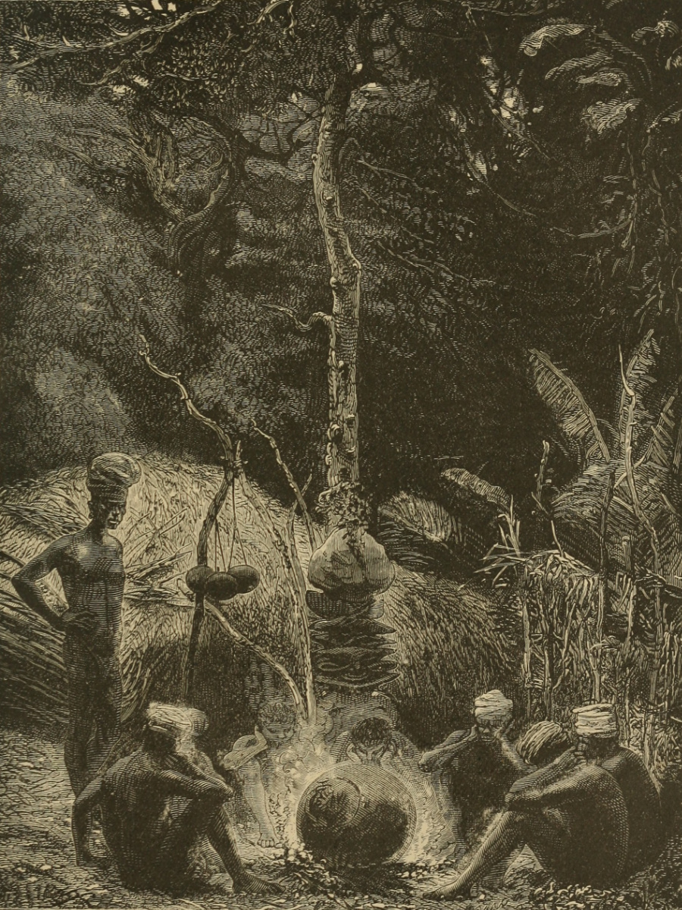
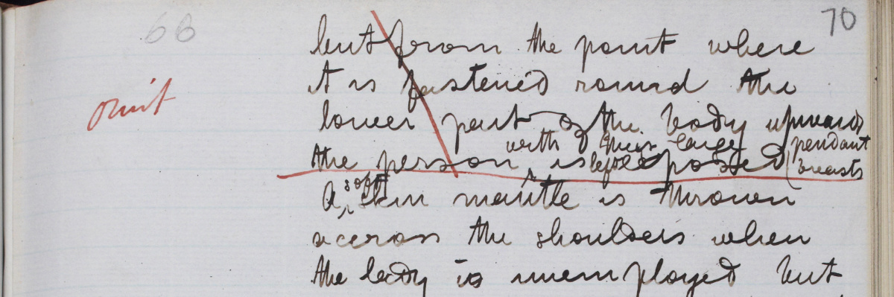
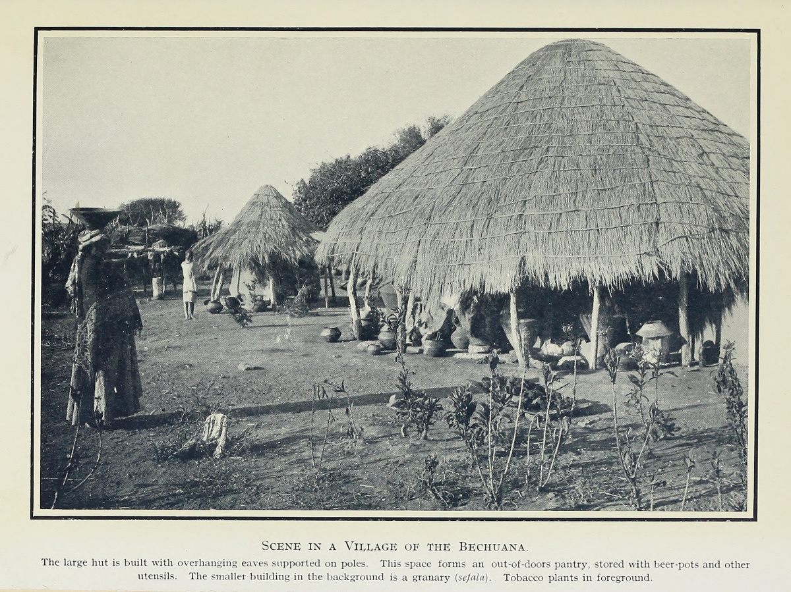
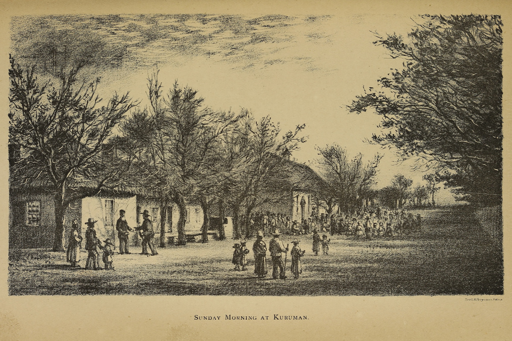
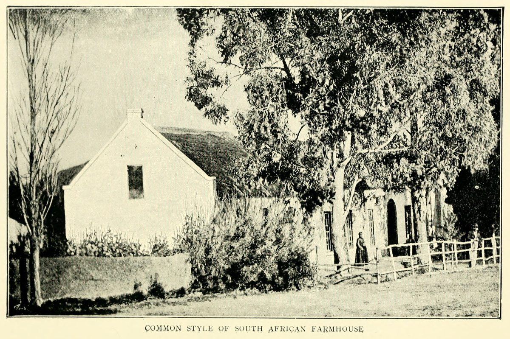
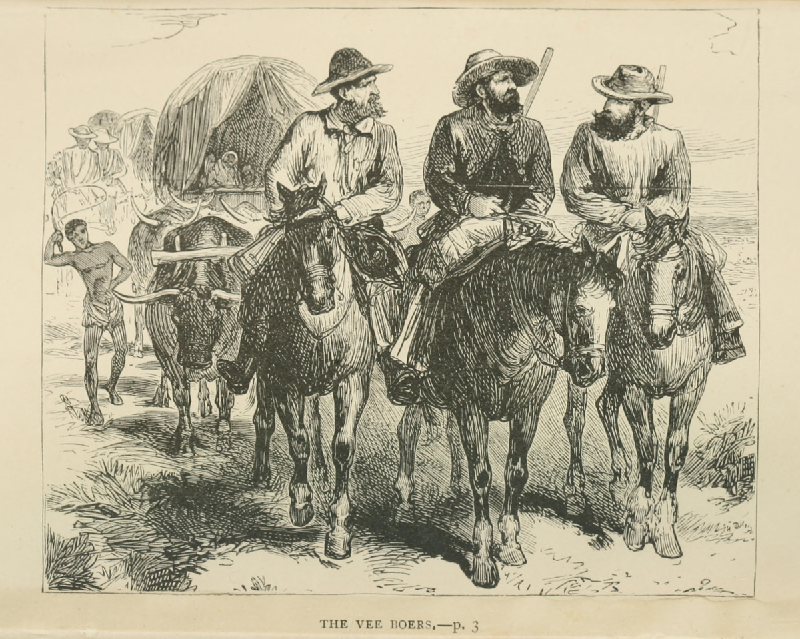
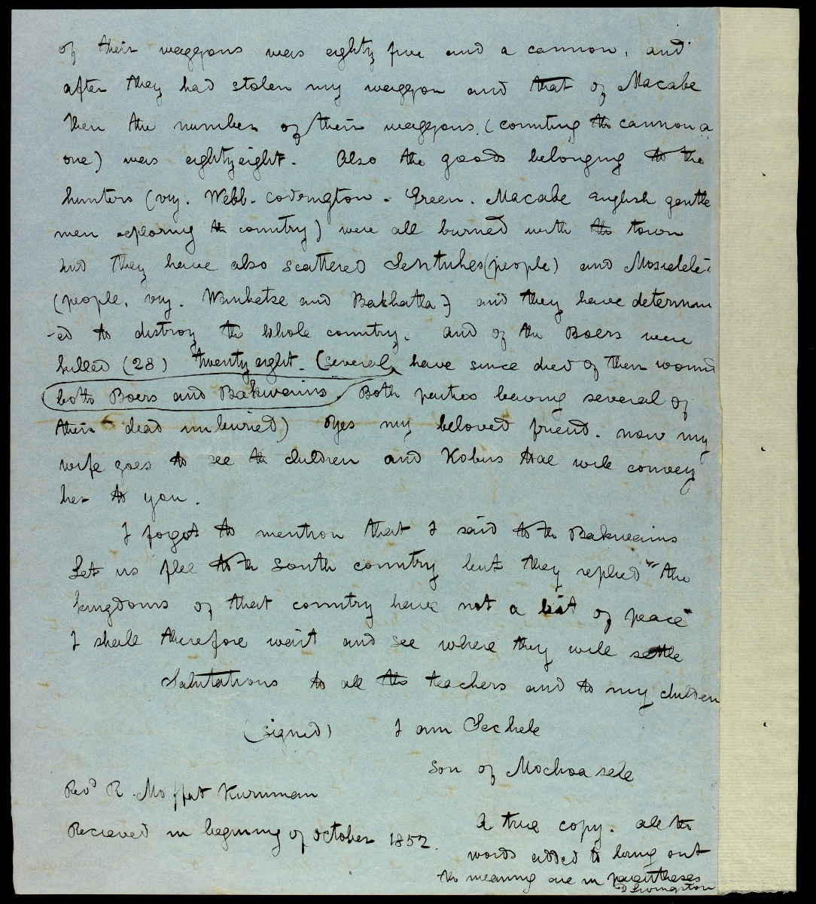
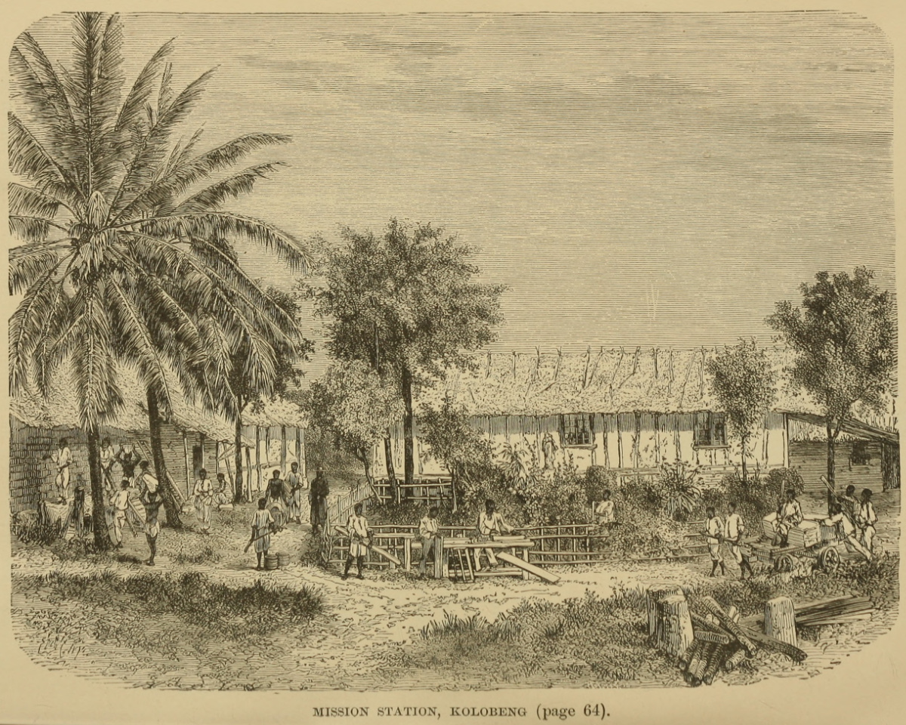
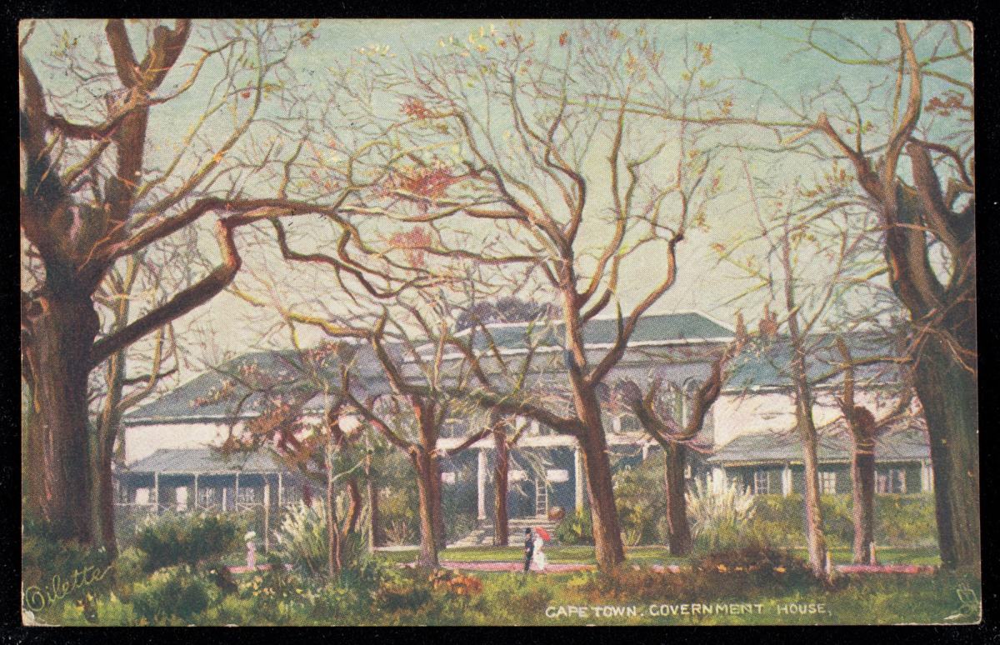
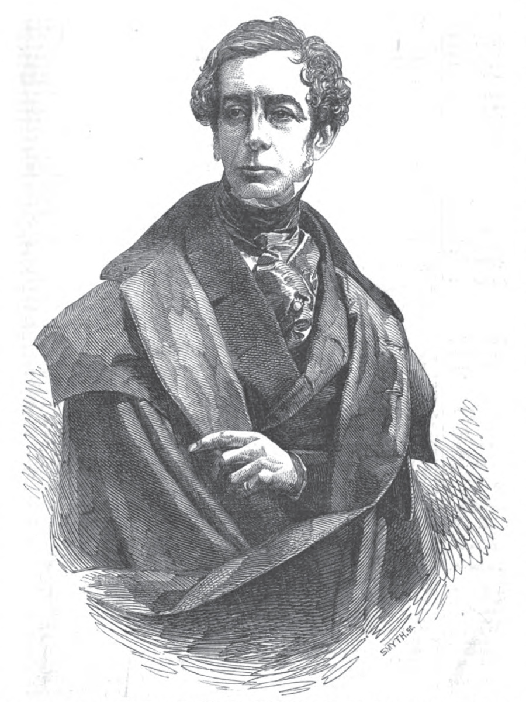

Livingstone’s Birthplace at Blantyre. Illustration from R. B Dawson, Livingstone the Hero of Africa (London: Seely, Service & Co., 1918), opposite 32. Courtesy of the Internet Archive. Livingstone’s working class background has been romanticised by many of his biographers, who have interpreted him as an exemplar of Victorian self-improvement. This artistic representation of Livingstone’s family home, which was tenement housing provided for Blantyre cotton mill employees, participates in the idealisation of workers’ conditions in nineteenth-century industrial Scotland.
 |
(Left; top in mobile) Birthplace of Livingstone. (Right; bottom in mobile) Factory at Blantyre. Illustrations from H. H. Johnston, Livingstone and the Exploration of Central Africa (London: George Philip & Son, 1891), 52, 56. Courtesy of the Internet Archive. These two reproductions of early photographs of Blantyre provide an alternative perspective on the conditions of Livingstone’s early life to the artistic representation above. On beginning work in 1823 at the Blantyre cotton mill, run by Monteith, Bogle and Co., Livingstone joined a substantial child work force employed by Scottish industry (see Mullen 2013:19).
 |
 |
(Left; top in mobile) Victoria Falls. (Right; bottom in mobile) Livingstone sees the Queen. Images from Lantern Slides of the Life, Adventures, and Work of David Livingstone (London Missionary Society c.1900:[3]-[4]). Images courtesy of the Smithsonian Libraries, Washington, D.C. The London Missionary Society participated in cultivating Livingstone’s posthumous reputation by producing a series of thirty-nine magic lantern slides showing iconic moments from his life. The inclusion of Livingstone’s audience with Queen Victoria, shown here beside Victoria Falls, indicates that propriety and respectability were characteristics that the London Missionary Society, like the John Murray publishing house, aimed to associate with one of its representatives.

Bushman’s camp. Illustration from J. E. Chambliss, The Life and Labors of David Livingstone, LL.D., D.C.L. (Philadelphia, Boston, and Cincinnati: Hubbard Bros., 1875), 69. Courtesy of the Internet Archive. The indigenous hunter-gatherer peoples of southern Africa, known collectively as the San, were historically called the Bushmen (now often considered pejorative). As descriptions of the Kalahari peoples circulated from the 1840s, following the journeys of European travellers through the region, the San became the subject of much speculative evolutionary science. The illustration above indicates that the San’s semi-nomadic lifestyle attracted racial stereotyping in nineteenth-century literature.


Images of two page segments from the Missionary Travels manuscript (Livingstone 1857cc:[71], 1857bb[312]), detail in both cases. Copyright National Library of Scotland and Dr. Neil Imray Livingstone Wilson (as relevant). Creative Commons Share-alike 2.5 UK: Scotland. These segments show editorial redactions of statements that might have regarded as improper by a polite readership.

Mr. Moffat exhorting the children of the chief Sechele. Illustration from Missionary Magazine and Chronicle, Dec. 1854, 255. Courtesy of the Internet Archive. Robert Moffat, who became Livingstone’s father-in-law, began work with the London Missionary Society among the southern BaTswana in 1816. He was one of the missionaries, preceding Livingstone, who considered BaTswana initiation rites to be an obstacle to the introduction of Christianity.

Scene in a village of the Bechuana. Illustration from J. Tom Brown, Among the Bantu Nomads (London: Seely, Service & Co., 1926). Courtesy of the Internet Archive. Although Livingstone’s period in southern Africa predates this photograph, the image provides a sense of the residences of the BaKwena and the other BaTswana groups that Livingstone regularly visited in his early missionary period.

South African Republic, Orange Free State and Cape Colony. Map from Henry Houghton Beck, History of South Africa and the Boer-British War (Philadelphia: Globe Bible Publishing, 1900). Courtesy of the Internet Archive. This map details the political division of southern Africa as it existed at the end of the nineteenth century.
Google map of relevant locations. This map shows the locations in southern Africa referenced in the present section and the distances between them. The locations identified are (left to right) Lake Ngami, Kuruman, Dimawe Hill, Kolobeng, Rustenburg, and Mokopane.

The arrival at Lake Ngami. Illustration from John S. Roberts, The Life and Explorations of David Livingstone L. L. D. (London: John G. Murdoch, 1870), frontispiece. Courtesy of the Internet Archive. Livingstone first crossed the Kalahari to reach Lake Ngami in 1849, with William Cotton Oswell and Mungo Murray. In 1850 and 1851, Livingstone made two more journeys through the Kalahari with the aim of going further north to the Makololo. On the second of these expeditions, undertaken with Oswell, Livingstone reached the Makololo and then continued north for his first sighting of the Zambezi River.

Sunday morning at Kuruman. Illustration from John MacKenzie, Ten Years North of the Orange River (Edinburgh: Edmonston and Douglas, 1871), opposite 72. Courtesy of the Internet Archive. Kuruman was established by Robert and Mary Moffat in the 1820s as a mission to the BaTlhaping (a BaTswana group) and became the centre of London Missionary Society activities in the region. Prior to the mission stations built by Livingstone in the 1840s, Kuruman was the furthest north of the LMS missions in southern Africa.

Common style of South African farmhouse. Illustration from John S. Moffat, The Lives of Robert & Mary Moffat (London: Fisher Unwin, 1885), 92. Courtesy of the Internet Archive. The mid-nineteenth-century Boer households that Livingstone visited in the Transvaal would have been similar in design to the farmhouse above.

The Vee Boers. Illustration from Mayne Reid, The Vee-Boers: A Tale of Adventure in Southern Africa (London: George Routledge and Sons, 1885), frontispiece. Courtesy of the Internet Archive. Although Livingstone had considerable influence on popular opinion in Britain about the Boers, other perspectives circulated. The Victorian children’s novelist, Mayne Reid, heroised the Voortrekkers in an adventure book for boys.
 |
 |
Letter to Robert Moffat I with speech (Sechele and Livingstone 1852:[1]-[2]). Images from SOAS Library, University of London. Images copyright Council for World Mission. Used by permission for private study, educational or research purposes only. Please contact SOAS Archives & Special Collections on docenquiry@soas.ac.uk for permission to use this material for any other purpose. As relevant, copyright Dr. Neil Imray Livingstone Wilson. Creative Commons Attribution-NonCommercial 3.0 Unported. This is Livingstone’s translation of a letter written by the BaKwena chief, Sechele, following the Battle of Dimawe fought against the Boers in 1852. Livingstone included most of this letter, which provides Sechele’s account of the Boers’ military campaign, in Missionary Travels (Livingstone 1857aa:118-19).

Mission station, Kolobeng. Illustration from J. E. Chambliss, The Life and Labors of David Livingstone, LL.D., D.C.L. (Philadelphia, Boston, and Cincinnati: Hubbard Bros., 1875), 75. Courtesy of the Internet Archive. Kolobeng was established in 1847 to the south-east of present-day Gaborone, Botswana. This was Livingstone’s third station, following previous missions at Mabotsa and Chonuane.

Postcard of Government House, Cape Town. Raphael Tuck & Sons, c. 1910. Original item held by The Newberry Library. Courtesy of the Internet Archive. Built in the 1790s, Government House historically served as an official residence of the Governor of the Cape. It was also the location of the first Cape Parliament held in 1854. Today, it is called De Tuynhuis and is the Cape Town office of South Africa’s President.
|  |  |
(Left; top in mobile) Major-General the Hon. George Cathcart, the Newly-Appointed Governor and Commander-in-Chief of the Cape of Good Hope.¬––From a Daguerreotype by Claudet. Illustration from Illustrated London News, 7 Feb. 1852, 125. Courtesy of the Hathi Trust. (Right; bottom in mobile) Image of a page from the Missionary Travels Manuscript (Livingstone 1857bb:[291]). Copyright National Library of Scotland and Dr. Neil Imray Livingstone Wilson (as relevant). Creative Commons Share-alike 2.5 UK: Scotland. The criticisms of George Cathcart on this manuscript page are marked up both by Livingstone and the editor, John Milton. The question mark and initials at margin left are in Livingstone’s hand. Milton’s marginal comment in red ink consists of an abbreviation of the word “query” along with “stet,” a proof correction mark for “let it stand.” The precise meaning of Milton’s annotation is unclear, but it is evident that he had reservations about retaining the passage.